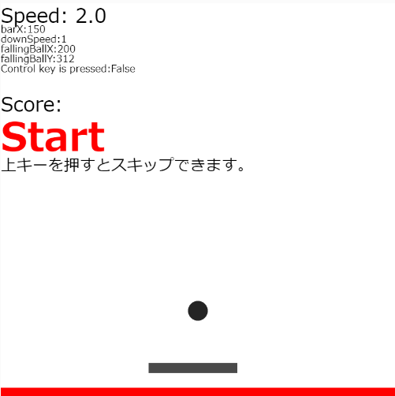

操作説明
左右の矢印キーでバーを動かします。
ボールを拾ってポイントを稼ぎましょう。
15%で当たると-５のボール（紫色）が、
7.5%で当たると+５のボール（黄色）が出ます。
Wキーを押しながら左右の矢印キーを押すと早く動かすことができます。
(コントロールキーにしたらブラウザが戻ったのでWキーになりました。)
赤い床にボールが触れたらゲームオーバーです。
ゲームオーバーになったらエンターキーでリスタートできます。
上矢印キーを押すといまボールがいるところの真下に落ちます。
下矢印キーを押すと早くボールが落ちます。
スコア40まではスコアが5上がるごとにボールが落ちてくるスピードが上がります。
それ以降は一定のスピードまで少しずつ落ちる速度が速くなっていきます。
Iキーを押すとアニメーションが付きます。
